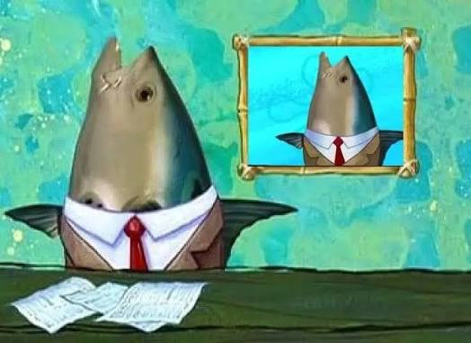

Noticia Principal del Día

El reconocido presentador pez de noticias informa en vivo desde el estudio sobre los acontecimientos más relevantes de la jornada.
FORMULARIO

El reconocido presentador pez de noticias informa en vivo desde el estudio sobre los acontecimientos más relevantes de la jornada.
Detalles sobre otro acontecimiento importante...